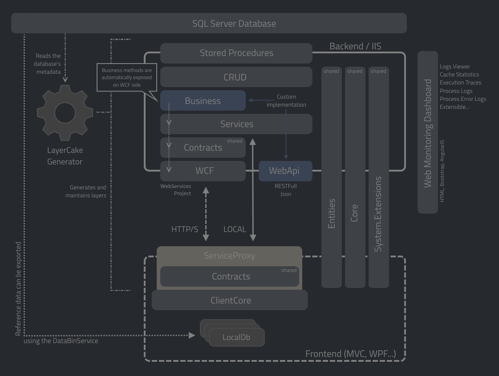

02 - Deployed Architecture

- Clients access to the Service Layer through WCF using ServiceProxy and Contracts
- The business logic is encapsulated in the Business Layer and is not known on client-side.
- The business methods are automatically exposed through the Service Layer thanks to LayerCake Generator Process Integration.
- Crud Layer contains all the required methods to access to the database data using stored procedures (including custom/auto-mapping).
- Business Layer have to be implemented.